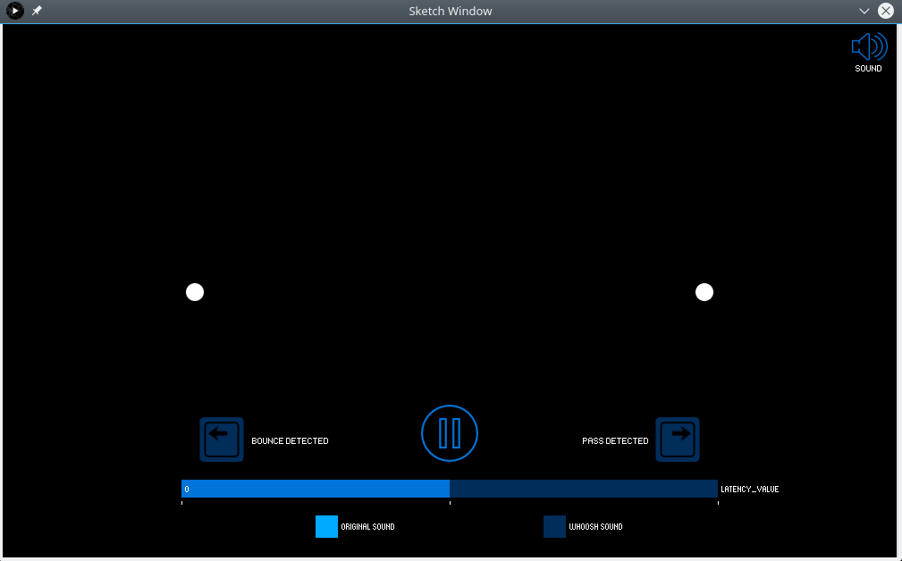
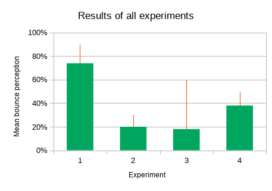

The objective of this assignment is to replicate the experiments from Watanabe's paper (Watanabe et al. (2001)) in order to document how including a new factor could affect the results. The approach chosen was to change the nature of the sound played (from a "crack" to a "whoosh") when the dots coincide in the same point and see how the timing of when this sound is played could alter the bounce-induction effect.
The experiments are displayed in a GUI designed by the student, similar to the used in the original paper, using the library ControlP5 for the language Processing.
 Final design of the GUIA total of 4 experiments were performed to test our thesis: the original experiment with the "crack" sound, the same experiment now using the "whoosh" sound, and another two experiments with the same sound, but playing it 200ms before and after the "colission", respectively. The results of these experiments are summarized in the following bar chart, where the vertical red lines indicate the maximum values registered.
 Results of all experimentsThe results of the first experiment are consistent with Watanabe et al. (2001), showing that the GUI does not affect the results. The next three experiments prove our thesis, that is, changing the nature of the sound does affect the results, causing an attenuation of the bounce induction effect (Experiment 2). Playing the sound before the "collision" attenuates even more the effect (Experiment 3, omitting extreme value of the observer 3), while playing it after makes the attenuation less effective (Experiment 4).